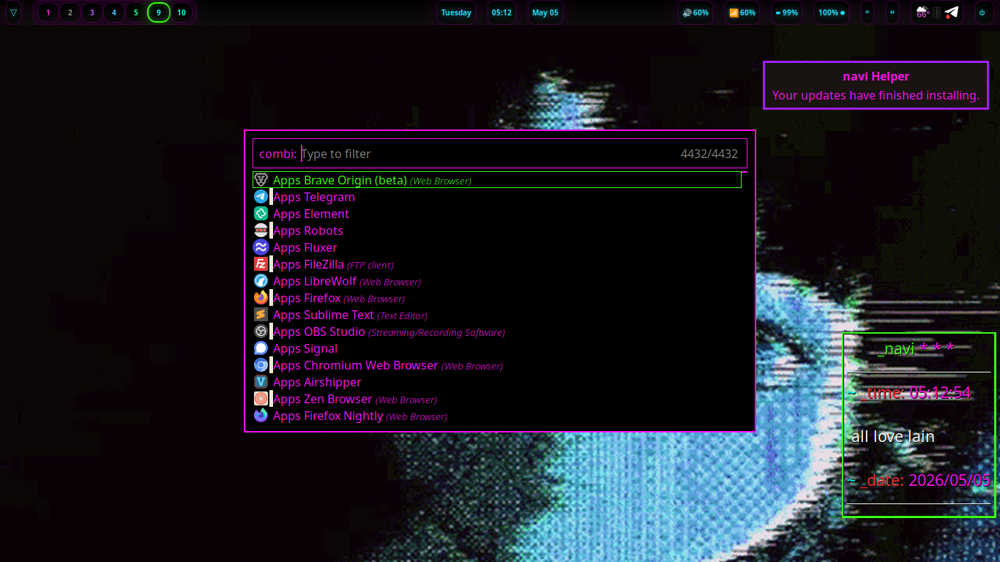
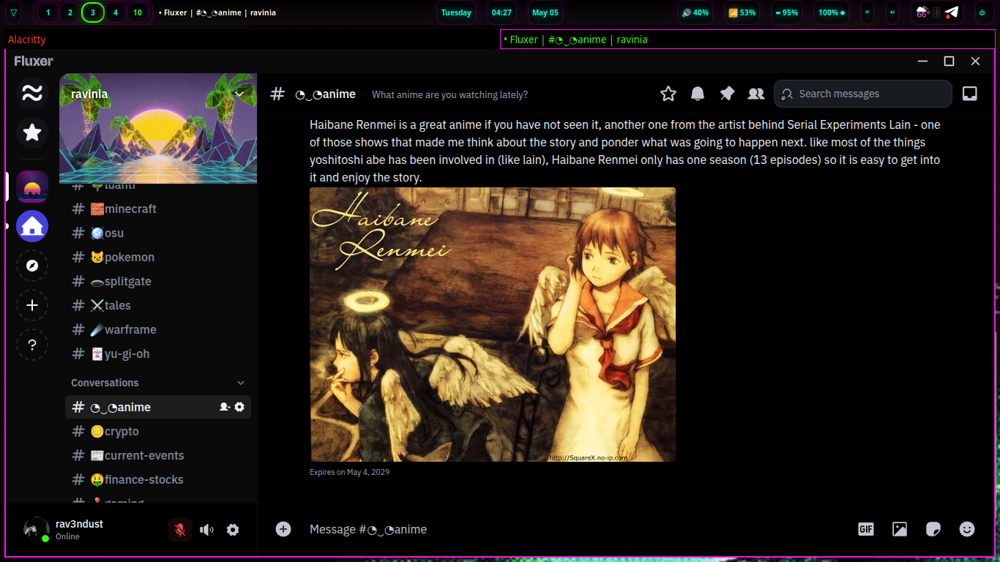

now | blog | wiki | recipes | bookmarks | contact | about | donate
* * * back home * * *
a unified vision and a beautiful product
2026-05-05

People seem to have the wrong idea when they think about computers and what computing should be for everybody. Some people hate their computers and barely touch them unless they are working or needing to get some small thing done online that they can't do on a cell phone. Otherwise, they don't want to be touching 'real' computers, because their main device is a cell phone or a tablet.
I know some people, and have heard of others, who are actually technical people who kinda fit the same bill. How many tech people do you know who actually hate their computers and don't want to be on them when they're not getting paid to be?
If you can't tell from this website and the things I write about and work on, you can probably tell that I love computing. I have always loved using my computers since I was a kid: Learning how they worked, playing games, learning things online, such as programming, lots of musical stuff, random bits of trivia about all kinds of different things. Finally, building things. Having something in my mind that I want to build, and then working to bring that thing I see in my mind to life, materializing into existence in the pixels in front of my eyes as I type.
That kind of feeling can be intoxicating for people who love computing and building things using their computers. If you're like me, you not only want your computer to be a functional device for getting your work, but you might also want some nice aesthetics there to make it that much more pleasant. I hang out on my computer for hours on end throughout each week: I want that environment to be beautiful, elegant, a wonder to behold when I sit down and look at the screen. I want it to be pleasing!
This is what we have been trying to achieve with naviOS. Using our custom theme system (nightshadeNeon), we have been building a system that looks nice and feels incredibly comfortable and productive to use.
A few of the things we've been doing to make sure naviOSis beautiful and cozy for anyone who uses it is to provide a "living" environment. So many things in the distro breathe and move with life. Our waybar is modified to look like it is glowing in RGB cycles, like a keyboard! It goes through the colors in the nightshadeNeon theme, and we also have our animated wallpapers that also match the same nightshadeNeon and Lain theme. The active window you are on is highlighted with intentional colors that are pretty while also giving some function: The main border of the window is neon pink, while the green line you see on the side or bottom of the window shows you which direction the next window is going to be tiled in.
It is little things like this that, in my opinion, adds up to a comfortable and beautiful computing environment. We have been building the computing environment that we want to use, and the fact that other people want to use it as well is a testament that we are doing something right. Computers are not meant just for being boring boxes where you access the internet or open a spreadsheet. They are also meant to be fun! With naviOS, we invite you to experience something a little new, something cohesive and gorgeous while also being extremely functional (wait till you're flying around the desktop with just your keybindings!).
You can set a whole vibe with the right color scheme. The nightshadeNeon theme, for example, is designed to feel comfortable as a perpetual dark mode, for example, since I never understood why more things didn't come in dark mode by default. It is certainly the main way I like to do things. Light mode makes me feel blinded. :)
I am going to go more into the technical side of the distro in a bigger writeup sometime when we get closer to release, but for now I want to focus on the design and cohesion side of it. It seems to be something more projects are thinking about these days, which is awesome. A lot of what we do is achieved through the magic of Cascading Stylesheets (CSS). If you aren't familiar, CSS is what you use to style the content of your website, as well.
Our waybar, for example, gets its colors and that "breathing" effect in the text from nothing but CSS. We use CSS keyframes in order to achieve that animation, and it looks so good to me. Very pleasing to the eye and blends right in with the rest of my setup. Plus, it is unique - I am not sure I've seen another distro do something similar.
As another example, we have skinned up Fluxer with our color scheme, so that it blends right in since it is going to be shipping with the distro. You can see what it looks like in the image below!

As you can see, we are big fans of cohesion and making things look uniform and like they should go together, creating a living, breathing environment to work and play in. If this sounds like something you would be a fan of, I definitely recommend checking out naviOS when it comes out! We are working hard to bring it to a summer release. Just a few final touches to put on some of our software suite to make sure it's all good and stable for release, and finishing up the website for the distro, then we are going to begin building some .iso images and pushing them out for you!
It has been my daily driver for a long time now, and I wasn't going to make it a proper distro, but I've had some people ask me about it enough times that I think it is something I want to do. I am looking foward to getting it out and seeing what people think about it! In a world where Windows has window decorations going between various generations of the operating system and Apple upsetting its users with "Liquid Glass", there is space in the world for computing systems that try to do things a little different, and I have been seeing this happen more and more over the last few years. Are we reaching a tipping point? I am not sure, but I think it is going to be fun to find out! :)
You can expect a more technical deep-dive into naviOS, as well as a video tour on how it works, very soon! This is something we're going to be pushing on this week, so it will be great to get it wrapped up. Looking forward to it, and until then, I hope you have a great week!